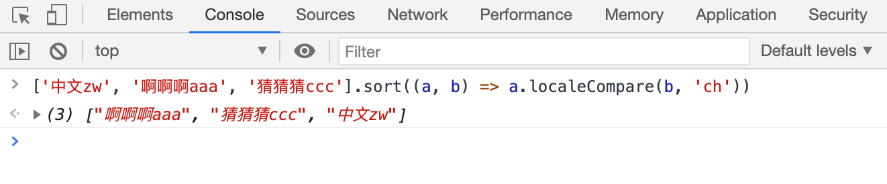

JS 使用 localeCompare 函数对中文进行首字母排序
这篇文章发布于 2020/12/07，归类于 JavaScript
标签：
js中文按首字母排序，前端中文按首字母排序，前端中文排序
tag: js中文按首字母排序, 前端中文按首字母排序,前端中文排序
String.prototype.localeCompare(compareString[, locales[, options]]) 该方法用于对字符串进行排序。第二个参数 locales 可以指定语言，中文排序传 'ch' 即可。它的返回值为 -1, 1, 0 ，与 sort 自定义排序的返回值基本一致。来看一个例子
['中文zw', '啊啊啊aaa', '猜猜猜ccc'].sort((a, b) => a.localeCompare(b, 'ch'))
// ["啊啊啊aaa", "猜猜猜ccc", "中文zw"]
参考：